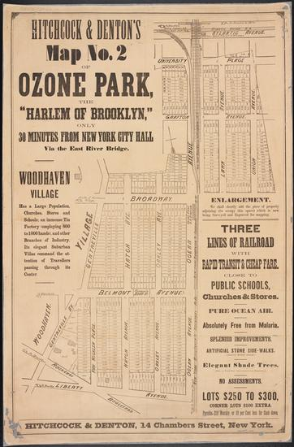

According to historical narratives, the Native Americans of the Jameco and Rockaway tribes were the first original settlers in the area that would eventually become Ozone Park. There was no borough of Queens in the 1860s, only the counties of Kings and Queens sitting near each other on the western end of Long Island. The county of Queens was sparsely populated outside of a few towns further north, including Flushing, Jamaica, Astoria and Newtown (later Elmhurst). In 1880, the Long Island Railroad built a station south of Woodhaven as part of its line from Long Island City to Howard Beach. Two years later, two speculators Benjamin W. Hitchcock and Charles C. Denton bought up most of the plots of land around the station and began marketing the area as a visionary new neighborhood called Ozone Park!
It was then that music publisher and developer Benjamin Hitchcock, the developer of Ozone Park, along with fellow partner Charles Denton, began converting farmland in the area into parking lots. From there, they began marketing the area to the south of Ozone Park for its “invigorating and healthful” breezes sweeping in from Jamaica Bay and the Atlantic Ocean—which fatefully led to the name ‘Ozone Park’ being chosen for the area. Soon after, in 1907, real estate developer David Leahy, known to some as “the Father of South Ozone Park” began building small homes in former farm fields by promising potential home owners that for $9 down, $6 per month, they could purchase a four-room cottage in the country. Knowing of the future expansion of the former Pennsylvania Railroad, purchased by the Long Island Rail Road in 1900, into the Jamaica area, Leahy anticipated that more and more people would be eager to move to South Ozone Park, thereby selling properties at an affordable price to attract settlers.
Since that time, Ozone Park has grown into a key part of Queens—home to the Aqueduct Racetrack, a casino, and maybe even soon the largest convention center in the nation, courtesy of the Genting Group—with a diverse demographic of roughly 45,000 residents that includes Hispanics, African-Americans, Italians, South Asians, people from the West Indies and South Americans. In previous years, Ozone Park had been a hub for mafia activity for the Gambino and Lucchese crime families, both of which ran operations based out of Ozone Park prior to law enforcement cracking down with various gang-busting operations. In fact, Bergin Hunt and Fish Club, the Gambino family’s headquarters, was right in the heart of Ozone Park, at 98-04 101st Avenue. The property houses a pet grooming boutique and a medical supply store now, but if walls could talk, we’re pretty confident they could make the parakeets blush, just a little.